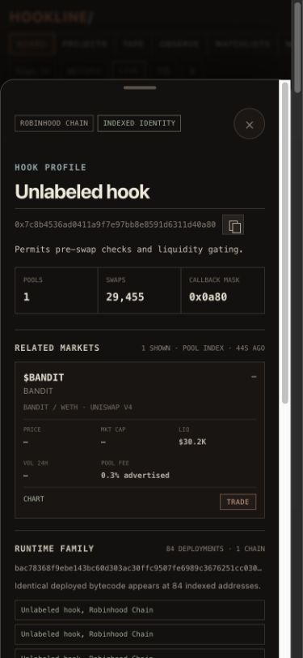

HOOKLINE/
EVIDENCE HANDOFF 02
From signal to proof.
Every relationship opens a compact record with chain, market, permission, and runtime context.


29,455indexed swaps
84byte-identical deployments
1 TAPfrom relationship to evidence
ROBINHOOD CHAIN · SOURCE WINDOWS REMAIN VISIBLE